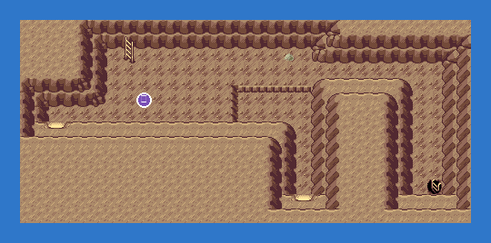
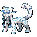

PokémonEMMA'S EMERALD
OFFICIAL Strategy Guide
Shoal Cave Low Tide Lower Room
‹ Shoal Cave Low Tide Stairs RoomQuest: Shoal Cave and the tides · 2 of 4Next: Shoal Cave Low Tide Inner Room ›
TIP
Wild Pokémon here are LV26–32. Time of day: M = morning (6–10), D = day (10–19), E = evening (19–20), N = night (20–6).
Event 1: Lower room
Snorunt and Spheal in the wild. Chien-Pao (six badges) prowls here.

Legendary Pokémon here
Chien-Pao
LV50
DarkIce
from 6 badges
Static encounters: walk up and press A. Caught = gone for good; beaten or fled = back next visit.
Catch ’Em All! Grass & caves
 | Zubat: | LV26 | Common | MDEN |
 | Spheal: | LV26 | Common | MDEN |
 | Frosmoth: | LV31–32 | Uncommon | MDEN |
 | Aron: | LV26–28 | Uncommon | MDEN |
 | Durant: | LV30 | Uncommon | MDEN |
 | Shieldon: | LV27–29 | Uncommon | MDEN |
 | Graveler: | LV27 | Uncommon | MDEN |
 | Larvitar: | LV30–31 | Uncommon | MDEN |
 | Alolan Graveler: | LV30–31 | Uncommon | MDEN |
 | Magnemite: | LV27–28 | Uncommon | MDEN |
 | Gallade: | LV31–32 | Uncommon | MDEN |
 | Dreepy: | LV27 | Uncommon | MDEN |
| Mr (Mime Galar): | LV28 | Uncommon | MDEN | |
 | Golett: | LV30–32 | Uncommon | MDEN |
 | Froslass: | LV26–27 | Uncommon | MDEN |
 | Eiscue (Ice): | LV30 | Uncommon | MDEN |
 | Mismagius: | LV26–28 | Uncommon | MDEN |
 | Gholdengo: | LV31–32 | Uncommon | MDEN |
 | Minior (Meteor Red): | LV31 | Uncommon | MDEN |
 | Dwebble: | LV31 | Uncommon | MDEN |
 | Alolan Dugtrio: | LV27–28 | Uncommon | MDEN |
 | Onix: | LV28–30 | Uncommon | MDEN |
 | Carbink: | LV29–30 | Uncommon | MDEN |
 | Rotom: | LV27–28 | Uncommon | MDEN |
 | Galarian Corsola: | LV31–32 | Uncommon | MDEN |
 | Yamask: | LV26 | Uncommon | MDEN |
 | Archen: | LV30–31 | Rare | MDEN |
 | Anorith: | LV29–30 | Rare | MDEN |
 | Hisuian Arcanine: | LV29–31 | Rare | MDEN |
 | Rhyhorn: | LV28–30 | Rare | MDEN |
 | Pawniard: | LV30 | Rare | MDEN |
 | Chimecho: | LV26 | Rare | MDEN |
 | Greavard: | LV26–28 | Rare | MDEN |
 | Shuppet: | LV30–31 | Rare | MDEN |
 | Sigilyph: | LV30–32 | Rare | MDEN |
 | Shuckle: | LV30–31 | Rare | MDEN |
 | Togedemaru: | LV30–31 | Rare | MDEN |
 | Galarian Stunfisk: | LV29–30 | Rare | MDEN |
 | Varoom: | LV29–31 | Rare | MDEN |
 | Unown: | LV30–32 | Rare | MDEN |
 | Duskull: | LV31–32 | Rare | MDEN |
 | Litwick: | LV29–30 | Rare | MDEN |
‹ Shoal Cave Low Tide Stairs RoomQuest: Shoal Cave and the tides · 2 of 4Next: Shoal Cave Low Tide Inner Room ›
16